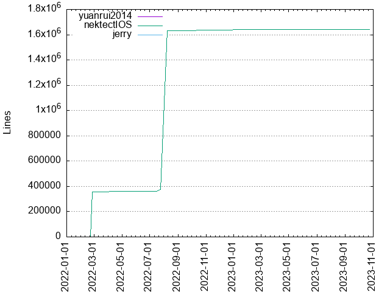
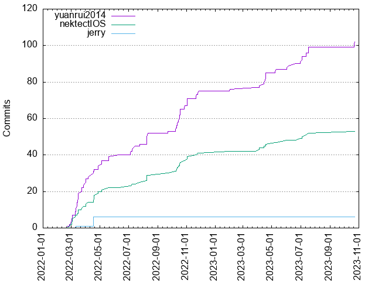

Authors
| Author | Commits (%) | + lines | - lines | First commit | Last commit | Age | Active days | # by commits |
|---|
| yuanrui2014 | 102 (62.96%) | 71 | 4 | 2022-02-21 | 2023-10-24 | 609 days, 20:01:42 | 69 | 1 |
| nektectIOS | 53 (32.72%) | 1639373 | 34169 | 2022-02-25 | 2023-10-23 | 604 days, 17:49:44 | 43 | 2 |
| jerry | 6 (3.70%) | 8 | 8 | 2022-03-11 | 2022-04-18 | 38 days, 6:04:31 | 2 | 3 |
| nekteckIOS | 1 (0.62%) | 0 | 0 | 2023-01-31 | 2023-01-31 | 0:00:00 | 1 | 4 |


| Month | Author | Commits (%) | Next top 5 | Number of authors |
|---|
| 2023-10 | yuanrui2014 | 3 (75.00% of 4) | nektectIOS | 2 |
| 2023-07 | yuanrui2014 | 8 (72.73% of 11) | nektectIOS | 2 |
| 2023-06 | yuanrui2014 | 4 (66.67% of 6) | nektectIOS | 2 |
| 2023-05 | yuanrui2014 | 2 (66.67% of 3) | nektectIOS | 2 |
| 2023-04 | yuanrui2014 | 8 (66.67% of 12) | nektectIOS | 2 |
| 2023-03 | yuanrui2014 | 1 (100.00% of 1) | | 1 |
| 2023-02 | yuanrui2014 | 1 (100.00% of 1) | | 1 |
| 2023-01 | nektectIOS | 1 (50.00% of 2) | nekteckIOS | 2 |
| 2022-11 | yuanrui2014 | 8 (66.67% of 12) | nektectIOS | 2 |
| 2022-10 | yuanrui2014 | 14 (66.67% of 21) | nektectIOS | 2 |
| 2022-09 | yuanrui2014 | 1 (50.00% of 2) | nektectIOS | 2 |
| 2022-08 | yuanrui2014 | 6 (60.00% of 10) | nektectIOS | 2 |
| 2022-07 | yuanrui2014 | 6 (66.67% of 9) | nektectIOS | 2 |
| 2022-06 | yuanrui2014 | 1 (100.00% of 1) | | 1 |
| 2022-05 | yuanrui2014 | 5 (71.43% of 7) | nektectIOS | 2 |
| 2022-04 | yuanrui2014 | 10 (43.48% of 23) | nektectIOS, jerry | 3 |
| 2022-03 | yuanrui2014 | 21 (65.62% of 32) | nektectIOS, jerry | 3 |
| 2022-02 | yuanrui2014 | 3 (60.00% of 5) | nektectIOS | 2 |
| Year | Author | Commits (%) | Next top 5 | Number of authors |
|---|
| 2023 | yuanrui2014 | 27 (67.50% of 40) | nektectIOS, nekteckIOS | 3 |
| 2022 | yuanrui2014 | 75 (61.48% of 122) | nektectIOS, jerry | 3 |
| Domains | Total (%) |
|---|
| users.noreply.github.com | 103 (63.58%) |
|---|
| nekteck.com | 59 (36.42%) |
|---|